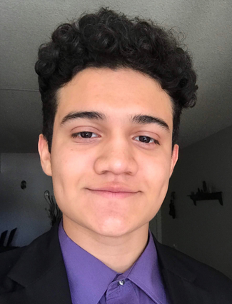

I graduated in 2022 from Boston University with a B.S in Biomedical Engineering. I gained an interest in surgical robotics during my undergraduate research involving the detection of surgical tools and patients' heads with depth cameras. My main interests are in computer vision, surgical robotics, and autonomous systems, and I aim to help develop new technologies in these fields.